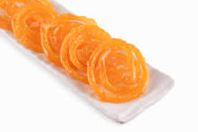

Jalebi

Ingredients
- 1/2 cup Maida/All Purpose Flour
- 1 tablespoon Corn Flour (white corn starch) or Aararoot Powder
- 1/4 teaspoon Baking Powder
- A pinch of Turmeric Powder (to get yellow color)
- 1/4 cup Curd (yogurt)
- 1/4 cup Water
- 1/2 cup Sugar
- 1/4 cup + 2 tablespoons Water
- 1 teaspoon Lemon Juice
- A pinch of Cardamom Powder (elayachi)
- 5-7 strands of Saffron (kesar), optional
Steps
For making Jalebi batter
- Sieve 1/2 cup maida in a medium bowl. Add 1-tablespoon corn flour (white corn starch), 1/4 teaspoon baking powder, a pinch of turmeric powder and 1/4 cup yogurt.
- Add water as needed (approx. 1/4 cup) and make a thick batter having consistency similar to vada batter (or little thicker than idli batter). Make sure that there are no lumps in batter.
- Cover the batter with a lid and keep it at room temperature for 24 hours to ferment. After 24 hours, remove the lid. The batter will have tiny bubbles on the surface and mild sour smell. Unlike Idli batter, its volume will not increase
- Stir the batter well with a spoon.
- It should have sticky and dropping consistency. If the batter is too thin, jalebi will turn crispy but flat and if the batter is too thick, jalebi will turn soft and thick.
- Pour the batter into an empty ketchup bottle or jalebi maker bottle or in a thick ziplock bag.
For making sugar syrup
- Add sugar, saffron strands, cardamom powder and water in a deep container and heat it over medium flame.
- Cook until the syrup reaches to 1-string consistency.
- When it reaches to 1-string consistency, add lemon juice. Mix well. Turn off the flame. Syrup is ready. [When you start making jalebis, heat the sugar syrup over low flame to keep it warm when the jalebis are dipped in it in next step.]
How to make jalebis
- Heat ghee/oil in a wide mouthed flat pan over medium flame to deep fry the jalebis. In this recipe, oil + 2 tablespoons ghee is used for deep frying. To check whether oil is ready for deep frying or not, add a drop of batter into hot oil and if it comes immediately on the surface without changing the color, oil is ready. When oil is ready, make round jalebis by squeezing the bottle (or ziplock bag) and moving it in a circular direction starting from the center towards the outside (or start from outside and move towards the center). Make 2-3 spirals of batter (or more or less depending on the size of a pan). If the jalebi doesn’t have perfect shape, don’t worry, as it requires some practice to make the perfect round shape. Its shape doesn’t affect its taste and texture.
- Flip 2-3 times (or as needed) using a tong to deep fry them evenly.
- Deep fry them until light golden and crispy.
- Remove it from the oil using a tong and immediately put it into the warm sugar syrup. Syrup should we warm or little hot, it shouldn’t be cold. Keep it in syrup for approx. 2-minutes; flip it once after a minute.
- Remove it from the syrup using a fork and transfer it to a plate. Jalebi is now ready for serving.